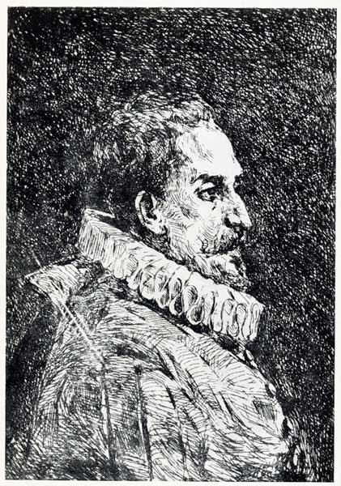
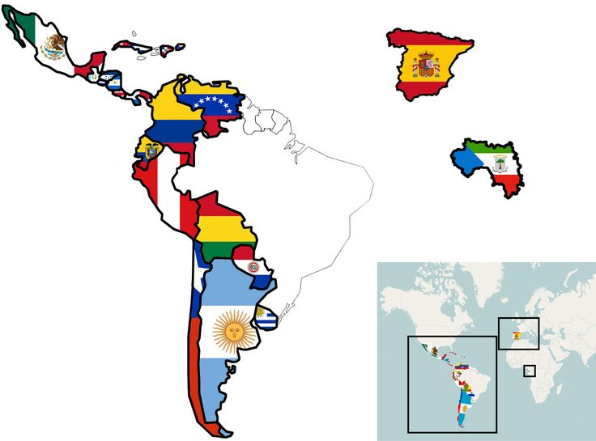

Historia del Día del Idioma
El Día del Idioma se celebra como un reconocimiento a la lengua española y su invaluable riqueza cultural, que se manifiesta en su diversidad, historia y papel fundamental como vehículo de identidad y comunicación entre millones de hablantes en el mundo. Esta conmemoración tiene lugar cada 23 de abril, una fecha emblemática que también rinde homenaje a Miguel de Cervantes Saavedra, considerado el máximo exponente de la literatura en español.
Se busca promover el correcto uso del español, fomentando su enseñanza adecuada en todos los niveles educativos y concienciando sobre la importancia de una comunicación clara y precisa. A través de esta conmemoración, se intenta combatir el empobrecimiento del idioma que a veces ocurre debido a mal uso o la falta de conocimiento de las normas gramaticales. Además, el Día del Idioma tiene como propósito alentar la lectura en todas sus formas, ya sea de libros, poesía, artículos o cualquier otra manifestación literaria, ya que la lectura no solo es una herramienta de conocimiento, sino también una forma de conectar con la historia, la cultura y la identidad de los pueblos.


| País | Nombre de la Celebración | Fecha |
|---|---|---|
| España | Día del Idioma Español | 23 de abril |
| Colombia | Día del Idioma | 23 de abril |
| México | Día Nacional del Español | 23 de abril |
Importancia del Día del Idioma
- Preservación cultural: Fomenta el reconocimiento y la valorización de los idiomas como patrimonio cultural de la humanidad.
- Unidad y diversidad: Aunque el español es compartido por muchas naciones, también celebra las particularidades locales, dialectos y expresiones que enriquecen la lengua.
- Fomento de la lectura y la escritura: Promueve actividades relacionadas con la literatura, la escritura creativa y la lectura, fundamentales para el desarrollo intelectual y personal.
- Reconocimiento histórico: Rinde homenaje a grandes autores que han contribuido al desarrollo del idioma y la cultura, como Miguel de Cervantes Saavedra.
- Reflexión sobre el uso del lenguaje: Invita a valorar el impacto del idioma en la comunicación, la educación y el desarrollo social.
Contexto General
- Fecha: El Día del Idioma se celebra el 23 de abril en varios países de habla hispana. Esta fecha no solo coincide con el aniversario de la muerte de Miguel de Cervantes Saavedra, sino que también es reconocida internacionalmente como el Día Mundial del Libro y del Derecho de Autor por la UNESCO, lo que refuerza la conexión entre la literatura y el idioma.
- Motivo: El principal motivo de esta celebración es honrar a Miguel de Cervantes Saavedra, autor de Don Quijote de la Mancha, considerada una de las obras literarias más influyentes en la historia de la lengua española. La elección de esta fecha también busca reflexionar sobre la importancia del idioma como vehículo de comunicación, identidad cultural y patrimonio compartido entre los países hispanohablantes.
- Significado Adicional: El 23 de abril también marca la fecha de fallecimiento de otros grandes autores, como William Shakespeare y Garcilaso de la Vega (aunque en distintos calendarios), lo que simboliza una conmemoración global de la literatura. En el caso del español, el Día del Idioma es una oportunidad para destacar la riqueza lingüística, promover su correcta utilización y fomentar el aprendizaje de este idioma, que es hablado por más de 500 millones de personas en todo el mundo.
- Actividades Comunes: En los países de habla hispana, se realizan actividades como:
- Lecturas públicas de Don Quijote de la Mancha y otras obras clásicas.
- Concursos literarios, como certámenes de poesía o cuentos.
- Charlas y talleres sobre la evolución de la lengua española y su impacto cultural.
- Reconocimientos a escritores, poetas y académicos que contribuyen al desarrollo del idioma.